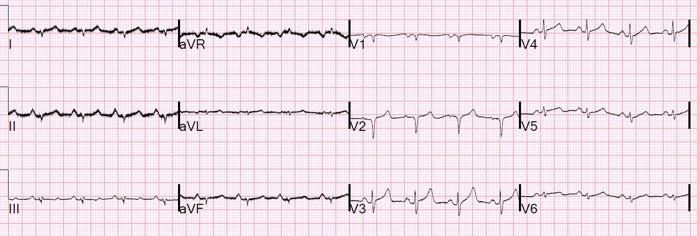
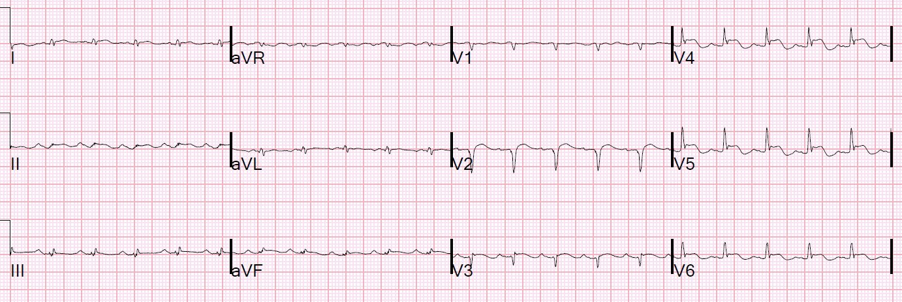
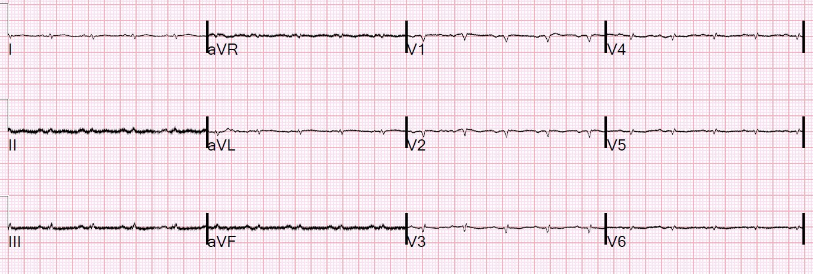
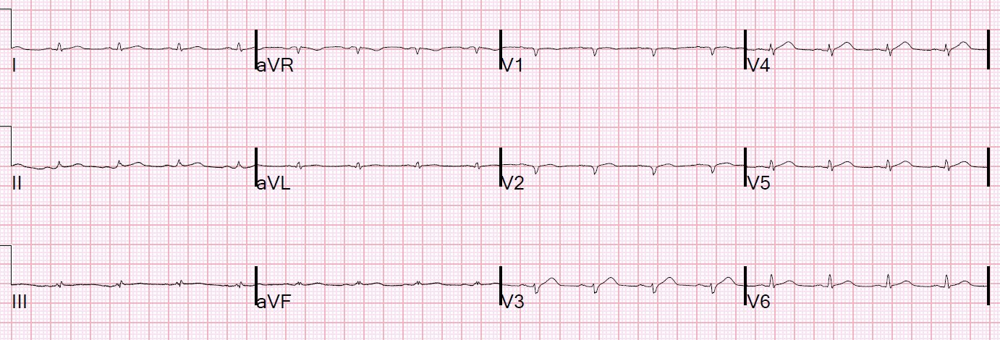
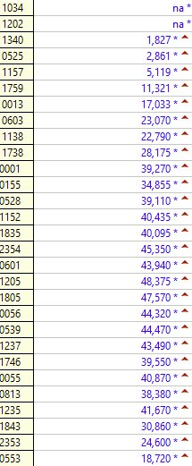
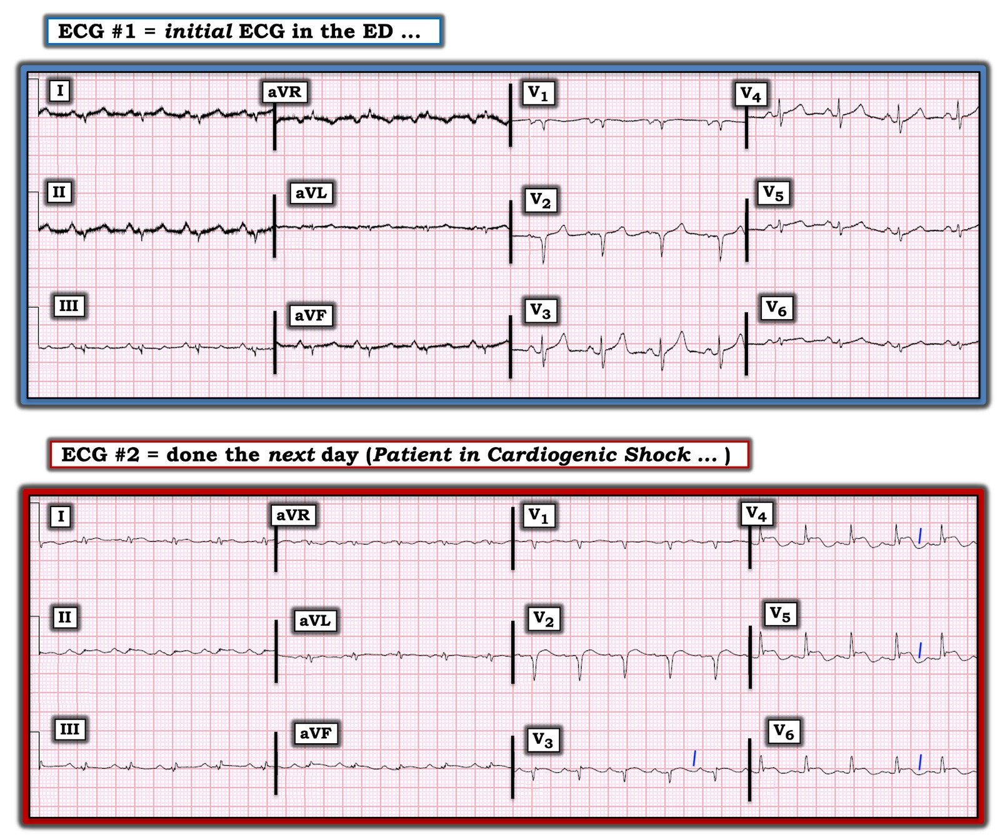

12/11/2020 — Sốc cực nặng và ngừng tim ở bệnh nhân COVID
Bản dịch tiếng Việt của bài "Extreme shock and cardiac arrest in COVID patient" – Dr. Smith’s ECG Blog. Giữ nguyên toàn bộ 9 hình ảnh và 1 video của bản gốc.
Đây là một bệnh nhân 30 mấy tuổi, khỏe mạnh, bị viêm phổi do COVID, đến khoa cấp cứu (ED). Bệnh nhân giảm oxy máu mức độ vừa. Điện tâm đồ ghi được như sau:


Điện thế thấp, gợi ý tràn dịch.
(xem phần bàn luận của Ken về điện thế thấp ở bên dưới)
Có sóng QS ở V2.
Có ST chênh lên (STE) rất nhẹ, có lẽ bình thường, ở V2-V6.
Siêu âm tim tại giường bình thường, không có tràn dịch.
Bệnh nhân được chỉ định xét nghiệm troponin, và kết quả đầu tiên là 72 ng/L (Abbott Architect hs cTnI; giới hạn trên tham chiếu (URL) ở nam = 34 ng/L). Troponin tăng ở bệnh nhân COVID làm nguy cơ tử vong cao gấp khoảng 4 lần so với troponin bình thường.
Bệnh nhân được nhập viện, thở oxy và diễn tiến khá tốt, độ bão hòa oxy đạt 100% khi thở 2 L qua ống thông mũi.
Đến ngày hôm sau, hs-cTnI đã tăng lên 1827 ng/L. Troponin đang tăng
Chiều hôm đó, bệnh nhân than khó thở tăng lên và được ghi nhận độ bão hòa oxy chỉ còn 70 mấy phần trăm, khiến một báo động cấp cứu nhỏ (mini code) được kích hoạt.
Các bác sĩ thấy bệnh nhân đang trong tình trạng sốc, độ bão hòa O2 rất kém. Bệnh nhân được đặt nội khí quản rồi sau đó mất mạch. Bệnh nhân được hồi sinh tim phổi (CPR) và có mạch trở lại sau khi dùng epinephrine, với nhịp QRS hẹp có tổ chức tần số 140, nhưng vẫn còn sốc nặng.
Siêu âm tim tại giường lúc này cho thấy tĩnh mạch chủ dưới (IVC) dẹt và dễ xẹp, nên bệnh nhân được truyền dịch, kèm thuốc vận mạch. Bệnh nhân lại mất mạch, và sau ép tim lại đạt tái lập tuần hoàn tự nhiên (ROSC) và được tăng thêm thuốc vận mạch. Lactat là 20, siêu âm tim tại giường (POC) ước tính EF 30%, còn siêu âm tim chính thức cho thấy EF chỉ 15%, thất phải bình thường.
Nhận định là sốc tim nặng xảy ra đột ngột.
Họ ghi một điện tâm đồ:


ST chênh lên mới. Đó là gì?
Có STE ở V2-V6. Sóng QS ở V2 vẫn còn. Cũng có STE ở I, aVL và II, nhưng gần như không thể nhận ra vì điện thế QRS rất nhỏ (và điện thế chung rất nhỏ) ở các chuyển đạo chi.
Lưu ý ST chênh lên có dạng dẹt: sóng T không cao hơn đoạn ST chênh lên. Trong nhồi máu cơ tim cấp, sóng T lớn, và tỷ số T/ST cao. Hình ảnh này điển hình hơn nhiều cho viêm cơ tim.
Nhưng chẩn đoán viêm cơ tim là việc đầy rủi ro. Vì vậy, khôn ngoan là nên xem xét các động mạch vành.
Chụp mạch vành âm tính.
Bệnh nhân vẫn tụt huyết áp và trong tình trạng sốc.
Bệnh nhân được bắt đầu hỗ trợ sự sống ngoài cơ thể (Extracorporeal Life Support, “VA ECMO”)
Đây là điện tâm đồ khi đang chạy ECMO:


Điện thế rất thấp
Vào ngày thứ 3, EF đã hồi phục (có vẻ nhanh!) và bệnh nhân được chuyển sang ECMO tĩnh mạch-tĩnh mạch (V-V) do suy hô hấp kéo dài. Bệnh nhân vẫn được hỗ trợ bằng bóng đối xung động mạch chủ. Đây là điện tâm đồ khi chạy ECMO V-V:


STE rất ít
Bệnh nhân được đo troponin rất nhiều lần. Kết quả như sau:


Những điểm cần học:
1. Chẩn đoán viêm cơ tim (-màng ngoài tim) là việc đầy rủi ro. Điện tâm đồ này chắc chắn trông giống viêm cơ tim, và đúng là do viêm cơ tim, nhưng bỏ sót tắc mạch vành cấp là điều không thể chấp nhận.
2. Nghĩ tới viêm cơ tim (-màng ngoài tim) trên điện tâm đồ khi tỷ số T/ST rất thấp. Nhồi máu cơ tim cấp thường có sóng T lớn, trừ khi bắt đầu tái tưới máu và do đó sóng T đảo ngược.
2. Hãy cảnh giác với troponin tăng ở bệnh nhân COVID. Dưới đây tôi viết một bài tổng quan ngắn về chủ đề này.
Để xem tổng quan đầy đủ về troponin trong COVID, xem bài báo này:
Kavsak PA, Hammarsten O, Worster A, Smith SW, Apple FS. Cardiac Troponin Testing in Patients with COVID-19: A Strategy for Testing and Reporting Results. Clin Chem [Internet] 2020;Truy cập tại: http://dx.doi.org/10.1093/clinchem/hvaa225
Tổng quan ngắn của Smith:
Troponin
ở bệnh nhân COVID tại khoa cấp cứu
Troponin
tim (cTn) là một dấu ấn không đặc hiệu của tổn thương cơ tim. Trong thời bình thường, công dụng phổ biến nhất của cTnI
là chẩn đoán, hoặc loại trừ, nhồi máu cơ tim cấp (AMI, một
phân nhóm của tổn thương cơ tim cấp.
Tuy nhiên, trong nhiều nghiên cứu, ngay cả khi không có AMI, cả tổn thương cơ tim cấp lẫn
mạn (được chẩn đoán bằng bất kỳ mức cTn tăng nào) đều là những dấu ấn
mạnh của kết cục bất lợi cả ngắn hạn lẫn dài hạn.1,2 Dữ liệu mới về tổn thương
cơ tim cấp liên quan đến COVID-19 một lần nữa cho thấy mối liên quan độc lập
rất mạnh giữa cTnI tăng và mức độ nặng của bệnh, bao gồm tử vong,
và sự tương quan giữa mức độ nặng tăng dần với nồng độ troponin tăng dần.3–8
Shi
và cs.3 đã nghiên cứu 416 bệnh nhân
nhập viện vì COVID tại Trung Quốc, trong đó 82 người có cTn(I) ban đầu vượt
giới hạn trên tham chiếu. Những người có
cTnI tăng, so với những người không tăng, diễn tiến bệnh nặng hơn trên
nhiều thước đo, bao gồm tử vong: (42 trên 82 [51.2%] so với 15 trên 334 [4.5%];
P < .001). Những người có cTnI tăng
có nhiều bệnh tim đi kèm hơn hẳn, nhưng theo mô hình hồi quy Cox, tổn thương tim
liên quan độc lập với nguy cơ tử vong cao hơn, cả trong khoảng thời gian từ
khi khởi phát triệu chứng (tỷ số nguy cơ, 4.26 [KTC 95%, 1.92-9.49]) lẫn từ lúc nhập viện đến
thời điểm kết cục (tỷ số nguy cơ, 3.41 [KTC 95%, 1.62-7.16]).
Guo
và cs.4 đã nghiên cứu 187 bệnh nhân nhập viện vì COVID. Tỷ lệ tử vong là 7.6% ở những người không có
bệnh tim mạch (CVD) và cTnT bình thường, và lên tới 69% ở những người có
CVD và chỉ cần một lần troponin tăng.
Ở những người tử vong (n= 43), nồng độ troponin (và NT-proBNP) tăng đều đặn
trong suốt thời gian nằm viện; ở những người sống sót (n= 144), nồng độ
giữ ở mức bình nguyên.
Trong
số 3047 bệnh nhân nhập viện tại 5 trung tâm y tế ở New York từ ngày 17 tháng Hai
đến ngày 12 tháng Tư, 2716 người được đo ít nhất một lần troponin I (0.030 ng/mL) trong
24 giờ đầu. 1601 người (62%) có troponin ban đầu trong giới hạn bình thường;
54 người có nồng độ ban đầu > 2.0 ng/mL.
Tuổi trung vị là 66.4 tuổi; 40.7% trên 70 tuổi, và 60% là
nam giới. Bệnh tim mạch phổ biến hơn ở
những người có troponin cao hơn. Troponin
cao hơn tương quan với tiền sử suy tim, đái tháo đường và
tăng huyết áp nhiều hơn, cũng như D-dimer cao hơn và gần như mọi dấu ấn
viêm. cTnI ban đầu trong khoảng 0.030
ng/mL đến 0.090 ng/mL (n = 455, 16.6%) có tỷ số nguy cơ tử vong đã hiệu chỉnh là
1.77 (1.39-2.26), và cTnI > 0.090 ng/mL (n= 530, 19.4%) liên quan với
HR 3.23 (2.59-4.02). Các tác giả không báo cáo troponin được nói tới
là troponin ban đầu, troponin đỉnh, hay có đo nhiều hơn một lần
troponin hay không.7
3
nghiên cứu này, cùng với 1 phân tích gộp nhỏ hơn,6 và một nghiên cứu nhỏ khác,8 cho thấy rõ troponin liên quan với mức độ
nặng và tử vong tăng trong COVID khi đã hiệu chỉnh theo nhiều
biến số khác. Tuy nhiên, cơ chế tổn thương
cơ tim liên quan đến COVID vẫn chưa chắc chắn, và có thể do
hội chứng vành cấp, viêm cơ tim, tổn thương trực tiếp từ các chất trung gian
viêm/cytokine, tổn thương vi mạch, nhồi máu cơ tim típ 2 do giảm oxy máu hoặc
nhịp nhanh, tổn thương vi mạch do vi huyết khối nội mạch lan tỏa,
SARS-CoV-2 xâm nhập trực tiếp vào tế bào cơ tim qua thụ thể ACE2, hoặc các
cơ chế chưa biết khác.
Tuy nhiên, troponin
tăng không định hướng được chiến lược điều trị nào nhằm giảm thiểu
tổn thương cơ tim. Chưa chắc chắn
liệu tổn thương cơ tim chỉ đơn thuần là dấu ấn của mức độ nặng, hay nó
góp phần vào mức độ nặng của bệnh và tử vong. Ở thời điểm này, troponin tăng không
do nhồi máu cơ tim cấp không định hướng điều trị, nhưng vẫn thiết yếu để chẩn đoán nhồi máu cơ tim
cấp, tình trạng có thể cùng tồn tại với COVID.
Vì lý do này, một số người cho rằng không nên đo troponin ở bệnh nhân
trừ khi nhồi máu cơ tim cấp nằm trong chẩn đoán phân biệt.9 Tuy nhiên, vì
troponin là dấu ấn rõ ràng của mức độ nặng và là yếu tố tiên đoán độc lập
mạnh cho kết cục bất lợi, nó có thể khá hữu ích trong quyết định hướng xử trí
tại khoa cấp cứu: nếu troponin tăng, thì nên
cân nhắc lại việc điều trị ngoại trú.
Khi
cTn tăng, có cách nào phân biệt AMI với tổn thương cơ tim
không phải AMI? Không có phương pháp nào thật
chính xác, nhưng điện tâm đồ và siêu âm tim giúp xác định nhu cầu
chụp mạch vành. Ở bệnh nhân không mắc COVID,
mức tăng troponin trong tổn thương cơ tim cấp không do thiếu máu cục bộ thấp hơn
đáng kể so với AMI típ 1 (dù tương tự AMI típ 2);1,10,11 ngược lại, dữ liệu của Guo cho thấy
giá trị cTnT ở bệnh nhân COVID rất nặng có tổn thương cơ tim tăng lên
mức rất cao.4
Đáng tiếc là bài báo này không cung cấp dữ liệu điện tâm đồ, siêu âm tim hay
chụp mạch vành, nên không chắc rằng các mức cao này xảy ra khi
không có nhồi máu cơ tim cấp.
Trong
một loạt 18 bệnh nhân COVID có ST chênh lên, 8 người được chẩn đoán
STEMI, trong đó 6 người được chụp mạch vành và thấy bệnh mạch vành tắc nghẽn.12 Tất cả bệnh nhân STEMI
đều có cTn rất cao, điển hình cho STEMI (cTnT > 1.0 ng/mL hoặc cTnI > 10 ng/mL),
nhưng 7/10 bệnh nhân không được chẩn đoán STEMI cũng có cTn cao tương tự, và tỷ lệ tử vong
rất cao ở cả hai nhóm. Vì nhiều
bệnh nhân COVID biểu hiện triệu chứng phù hợp với AMI, cả STEMI lẫn NSTEMI
dường như rất khó phân biệt với các tổn thương cơ tim khác ở
bệnh nhân COVID rất nặng. Tuy vậy,
nếu điện tâm đồ điển hình cho tắc mạch vành cấp (đặc biệt là STEMI),
khuyến cáo can thiệp ngay nếu có sẵn, và nếu bệnh nhân
không ở giai đoạn cuối13. Khi điện tâm đồ
không chẩn đoán được tắc mạch vành, hoặc nghi ngờ bệnh nhân bị
nhồi máu cơ tim không do tắc, hãy cân nhắc siêu âm tim để hỗ trợ quyết định
chụp mạch vành.13
1. Sandoval Y, Smith SW,
Sexter A, và cs. Type 1 and 2 Myocardial Infarction and Myocardial Injury:
Clinical Transition to High-Sensitivity Cardiac Troponin I. Am J Med [Internet]
2017;130(12):1431–9.e4. Truy cập tại: http://dx.doi.org/10.1016/j.amjmed.2017.05.049
2. Sandoval Y, Thygesen K.
Myocardial Infarction Type 2 and Myocardial Injury. Clin Chem [Internet]
2017;63(1):101–7. Truy cập tại: http://dx.doi.org/10.1373/clinchem.2016.255521
3. Shi S, Qin M, Shen B, và
cs. Association of Cardiac Injury With Mortality in Hospitalized Patients With
COVID-19 in Wuhan, China. JAMA Cardiol [Internet] 2020;Truy cập tại: http://dx.doi.org/10.1001/jamacardio.2020.0950
4. Guo T, Fan Y, Chen M, và
cs. Cardiovascular Implications of Fatal Outcomes of Patients With Coronavirus
Disease 2019 (COVID-19). JAMA Cardiol [Internet] 2020;Truy cập tại: http://dx.doi.org/10.1001/jamacardio.2020.1017
5. Bonow RO, Fonarow GC,
O’Gara PT, Yancy CW. Association of Coronavirus Disease 2019 (COVID-19) With
Myocardial Injury and Mortality. JAMA Cardiol [Internet] 2020;Truy cập tại: http://dx.doi.org/10.1001/jamacardio.2020.1105
6. Lippi G, Lavie CJ,
Sanchis-Gomar F. Cardiac troponin I in patients with coronavirus disease 2019
(COVID-19): Evidence from a meta-analysis. Prog Cardiovasc Dis [Internet]
2020;Truy cập tại: http://dx.doi.org/10.1016/j.pcad.2020.03.001
7. Lala A, Johnson KW,
Russak AJ, và cs. Prevalence and Impact of Myocardial Injury in Patients
Hospitalized with COVID-19 Infection. medRxiv [Internet] 2020;Truy cập tại: https://www.medrxiv.org/content/10.1101/2020.04.20.20072702v1.abstract
8. He XW, Lai JS, Cheng J,
và cs. Impact of complicated myocardial injury on the clinical outcome of
severe or critically ill COVID-19 patients. Zhonghua Xin Xue Guan Bing Za Zhi
[Internet] 2020;48:E011–E011. Truy cập tại: https://europepmc.org/article/med/32171190
9. of Cardiology AC, và những tác giả khác.
Troponin and BNP Use in COVID-19. 2020;
10. Sandoval Y, Smith SW,
Sexter A, Schulz K, Apple FS. Use of objective evidence of myocardial ischemia
to facilitate the diagnostic and prognostic distinction between type 2
myocardial infarction and myocardial injury. Eur Heart J Acute Cardiovasc Care
[Internet] 2020;9(1):62–9. Truy cập tại: http://dx.doi.org/10.1177/2048872618787796
11. Sandoval Y, Thordsen SE,
Smith SW, và cs. Cardiac troponin changes to distinguish type 1 and type 2
myocardial infarction and 180-day mortality risk. Eur Heart J Acute Cardiovasc
Care [Internet] 2014;3(4):317–25. Truy cập tại: http://dx.doi.org/10.1177/2048872614538411
12. Bangalore S, Sharma A,
Slotwiner A, và cs. ST-segment elevation in patients with Covid-19—A case
series. N Engl J Med [Internet] 2020;Truy cập tại: https://www.nejm.org/doi/full/10.1056/NEJMc2009020
13. Mahmud E, Dauerman HL,
Welt FG, và cs. Management of Acute Myocardial Infarction During the COVID-19
Pandemic. J Am Coll Cardiol [Internet] 2020;Truy cập tại: http://dx.doi.org/10.1016/j.jacc.2020.04.039

===================================
BÌNH LUẬN CỦA TÔI, bởi KEN GRAUER, MD (12/11/2020):
===================================
Ca này có 2 đặc điểm độc đáo: i) Troponin tăng vọt ở bệnh nhân viêm phổi do COVID nguy kịch này (điều mà Dr. Smith đã bàn chi tiết ở trên); và, ii) Điện thế thấp cực độ trên điện tâm đồ.
- Dựa vào 2 điện tâm đồ đầu tiên trong ca hôm nay — tôi tập trung bình luận vào dấu hiệu điện thế thấp trên điện tâm đồ. Để rõ ràng — tôi đã đưa lại 2 điện tâm đồ đầu tiên này trong Hình 1.


Hình 1: 2 điện tâm đồ đầu tiên trong ca hôm nay (Xem bài).
SUY NGHĨ CỦA TÔI về điện tâm đồ #1:
Theo Dr. Smith — bệnh nhân là nam giới 30 mấy tuổi đến viện vì giảm oxy máu do viêm phổi COVID. Vào thời điểm ghi điện tâm đồ ban đầu ( = điện tâm đồ #1) — bệnh nhân giảm oxy máu mức độ vừa — nhưng đáp ứng với 2L oxy (thở qua ống thông mũi), độ bão hòa O2 trở lại 100%. Siêu âm tim tại giường lúc này cho thấy chức năng thất trái bình thường và không có tràn dịch màng ngoài tim hay tràn dịch màng phổi.
- ĐIỂM #1: Có nhiễu đường nền trên điện tâm đồ #1 — rõ nhất ở các chuyển đạo chi. Chúng ta biết nguồn gốc của nhiễu này xuất phát từ chỗ nối điện cực RA ( = tay phải — Right Arm) — vì: i) Nhiễu lớn nhất ở các chuyển đạo chuẩn I và II — trong khi hầu như không có nhiễu ở chuyển đạo III. Điều này gợi ý Tay phải là chi “thủ phạm” — vì theo tam giác Einthoven, điện cực RA này tham gia như nhau vào việc tạo dựng điện học của chuyển đạo I và II; ii) Không có nhiễu đường nền ở chuyển đạo III. Lý do — là điện cực RA không được dùng để tạo dựng điện học chuyển đạo III; và, iii) Trong 3 chuyển đạo tăng thế, nhiễu lớn nhất ở chuyển đạo aVR (là chuyển đạo có điện cực RA) — và mức nhiễu tương đối ở 2 chuyển đạo tăng thế còn lại xấp xỉ một nửa biên độ nhiễu thấy ở aVR (tương ứng chính xác với phương trình dùng để tính điện thế ở 2 chuyển đạo tăng thế còn lại này). LƯU Ý: Ai quan tâm — tôi đã điểm lại chi tiết cách xác định “chi thủ phạm” gây nhiễu trong Bình luận của tôi ở bài ngày 27 tháng Chín năm 2019 trên Dr. Smith’s ECG Blog.
- ĐIỂM #2: Biên độ QRS (điện thế) nói chung giảm rõ rệt trên điện tâm đồ #1. Đáng chú ý — biên độ sóng P có vẻ bình thường, gần như thỏa tiêu chuẩn điện tâm đồ của RAA (bất thường nhĩ phải — Right Atrial Abnormality) ở chuyển đạo II, nơi sóng P nhọn và cao ~2 mm. Biên độ sóng P này lớn bằng (hoặc lớn hơn) biên độ QRS ở 8/12 chuyển đạo trên bản ghi này. Vì vậy — có điện thế thấp lan tỏa.
- Ngoài ra, trên điện tâm đồ #1 — nhịp là nhịp xoang tần số ~95/phút — và các khoảng PR, QRS, QTc bình thường. Trục mặt phẳng trán không xác định (tức là, nằm ở góc phần tư trên bên phải) — vì ngoài aVR, các phức bộ QRS rất nhỏ ở chuyển đạo chi hoặc đẳng điện, hoặc âm là chủ yếu. Không có lớn buồng tim.
Về Thay đổi Q–R–S–T:
- Có phức bộ QS ở chuyển đạo V1 và V2 của điện tâm đồ #1. Do biên độ QRS rất nhỏ — khó nói có hay không có sóng Q ở chuyển đạo II. Tôi cho rằng các phức bộ ở những chuyển đạo chi còn lại đều có sóng lệch ban đầu dương.
- Tăng tiến sóng R phù hợp sau các phức bộ QS ở V1 và V2. Đáng chú ý (và phù hợp với những gì thấy ở các chuyển đạo chi) — biên độ QRS một lần nữa rất nhỏ ở các chuyển đạo ngực bên.
- Có hiện tượng thẳng đuỗn đoạn ST ở nhiều chuyển đạo — kèm ST chênh lên nhẹ ở vài chuyển đạo ngực. Thấy sóng T nhọn không tương xứng ở chuyển đạo I và V3. Dù vậy (theo Dr. Smith) — nhận định chung là điện tâm đồ #1 không có dấu hiệu gợi ý OMI.
- Về lâm sàng — dù troponin ban đầu tăng gấp 2 lần, siêu âm tim tại giường bình thường giúp yên tâm rằng không phải OMI hay thuyên tắc phổi.
SUY NGHĨ CỦA TÔI về điện tâm đồ #2:
Tình trạng lâm sàng của bệnh nhân xấu đi vào ngày hôm sau. Troponin tăng rất mạnh — và bệnh nhân ngày càng giảm oxy máu. Anh mất mạch hơn 1 lần (nhiều khả năng trong tình trạng phân ly điện cơ — EMD) — nhưng đáp ứng với hồi sức + điều trị thuốc vận mạch, có mạch trở lại với nhịp tự nhiên. Trong giai đoạn này — điện tâm đồ #2 được ghi (Hình 1). Về lâm sàng — bệnh nhân được nhận định là đang trong tình trạng sốc tim.
- Điện tâm đồ trên bản ghi theo dõi này (điện tâm đồ #2) một lần nữa cho thấy điện thế thấp lan tỏa, với biên độ QRS chung tương đương với điện tâm đồ #1. Nhiễu ở chuyển đạo chi (từ chi RA “thủ phạm”) đã hết. Nhịp một lần nữa là nhịp xoang — dù với tần số nhanh hơn so với điện tâm đồ #1. Nhịp nhanh xoang này (~130/phút) — phù hợp với tình trạng lâm sàng xấu đi của bệnh nhân, với sự xuất hiện của sốc tim.
- Điều thú vị là (dù tôi không chắc vì sao …) — biên độ sóng P đã giảm ở hầu hết các chuyển đạo trên điện tâm đồ #2 — và trục mặt phẳng trán không còn là không xác định nữa.
- Theo Dr. Smith — một thay đổi đáng chú ý giữa điện tâm đồ #1 và điện tâm đồ #2 là sự xuất hiện ST chênh lên kín đáo nhưng có thật ở nhiều chuyển đạo (tức là, ở các chuyển đạo I, II, aVF; và ở các chuyển đạo ngực từ V2 đến V6). Cũng có sự nổi bật của một “chỗ lõm” âm sau các đoạn ST chênh lên ở một số chuyển đạo (các đường XANH chéo ở các chuyển đạo từ V3 đến V6, và “chỗ lõm” âm nhiều khả năng cũng có ở chuyển đạo II và aVF). Chỗ lõm âm rộng đáng ngạc nhiên này là phần cuối sóng T âm (dẫn đến QTc kéo dài) hay có thể là sóng U đảo ngược thì chưa chắc chắn — nhưng dấu hiệu này rõ ràng không có trên điện tâm đồ #1.
- ĐIỂM #3 ( = ĐIỂM THEN CHỐT (PEARL) của Dr. Smith! ): Một điểm đáng nhắc lại mà Dr. Smith đã nhấn mạnh ở trên là hình dạng của ST chênh lên mới xuất hiện trên điện tâm đồ #2 — vốn phẳng! Trái với sóng T nhọn lên và tăng kích thước thường gặp trong nhồi máu cơ tim cấp — hình dạng ST chênh lên ngang bằng đáng ngạc nhiên ( = phẳng) thấy ở nhiều chuyển đạo trên điện tâm đồ #2 mà không có sóng T nổi bật thì đặc trưng hơn nhiều cho viêm cơ tim cấp so với OMI.
BÌNH LUẬN: Thông tim cho kết quả âm tính — và ủng hộ giả định lâm sàng là viêm cơ tim kèm troponin tăng rõ rệt. Ý nghĩa tiên lượng xấu của troponin tăng rõ rệt ở bệnh nhân Covid-19 bệnh cấp tính nặng này đã được Dr. Smith trình bày chi tiết. Nhưng dấu hiệu điện thế thấp trên điện tâm đồ đáng được nói thêm:
- Tôi đã bàn về Điện thế Thấp trong Bình luận của tôi ở cuối trang của bài ngày 24 tháng Một năm 2020 trên Dr. Smith’s ECG Blog.
- Điện thế Thấp thực sự được định nghĩa là biên độ QRS ≤5 mm ở tất cả chuyển đạo chi. Trong một quần thể không chọn lọc — điện thế thấp thực sự là dấu hiệu điện tâm đồ tương đối ít gặp. Đáng chú ý — có thể có (hoặc không) kèm điện thế thấp (≤10 mm) ở tất cả chuyển đạo ngực (Hình 2). Tiêu chuẩn của điện thế thấp toàn thể (tức là, có ở cả chuyển đạo chi lẫn chuyển đạo ngực) — dễ dàng được thỏa ở cả hai bản ghi trong Hình 1.
- ĐIỂM #4: Chẩn đoán phân biệt của “điện thế thấp” mà nhiều người thường đưa ra có xu hướng bắt đầu và kết thúc ở tràn dịch màng ngoài tim. Nhưng nhìn vào Hình 2 sẽ nhắc chúng ta về một danh sách dài các bệnh cảnh khác cần cân nhắc! Danh sách này càng thêm ý nghĩa trong bối cảnh đại dịch Covid-19 đang diễn ra — vốn tạo thuận lợi cho các biến cố huyết khối cấp, bệnh cơ tim do stress (Takotsubo), nhồi máu/thiếu máu cục bộ và viêm cơ tim. Bất kỳ bệnh cảnh nào trong số này cũng có thể gây “choáng” cơ tim (tức là, giảm mạnh thoáng qua sức co bóp của tim, xảy ra để đáp ứng với một tổn thương cấp tính lớn).

Hình 2: Các nguyên nhân gây Điện thế Thấp trên điện tâm đồ (Xem bài).
= = = = =
LƯU Ý: Để biết thông tin về “Bất tương xứng điện thế” (Voltage Discordance) (tức là, khi có điện thế thấp ở các chuyển đạo chi — nhưng điện thế bình thường ở các chuyển đạo ngực) — Xem PHẦN BỔ SUNG ở cuối trang này.
ĐIỂM #5: Tôi xin kết thúc bằng một chút suy đoán dựa trên đối chiếu lâm sàng của ca hôm nay với các dấu hiệu điện tâm đồ trên 2 bản ghi trong Hình 1. Điện thế thấp đã được ghi nhận trên điện tâm đồ ban đầu (điện tâm đồ #1) — dù siêu âm tim tại giường lúc đó cho thấy chức năng thất trái bình thường.
- Bên cạnh ý nghĩa tiên lượng xấu của troponin tăng mạnh ở bệnh nhân Covid-19 nặng — phải chăng dấu hiệu điện thế thấp lan tỏa trên điện tâm đồ là thêm một điềm báo về sự suy giảm chức năng thất trái sẽ sớm xảy ra?
- Có độ trễ giữa điện thế thấp lan tỏa trên điện tâm đồ và dấu hiệu giảm co bóp trên siêu âm tim không?
- Điện thế thấp + troponin tăng dần trong bối cảnh của bệnh nhân hôm nay có phải là điềm báo của viêm cơ tim liên quan đến Covid không?
- Biên độ sóng P được bảo tồn (như thấy trên điện tâm đồ #1) trong khi các phức bộ QRS co nhỏ lại có phải là dấu hiệu của choáng cơ tim sắp xuất hiện không?
- NẾU bệnh nhân trong ca hôm nay hồi phục hoàn toàn — thì diễn tiến theo thời gian để biên độ QRS trên điện tâm đồ trở lại mức hợp lý và sức co bóp trên siêu âm tim cải thiện sẽ NHƯ THẾ NÀO?
Hãy chờ đón câu trả lời!

=============================================
PHẦN BỔ SUNG (25/1/2025):
Thế nào là Bất tương xứng Điện thế?
- Đôi khi có điện thế thấp ở các chuyển đạo chi (tức là, mọi điện thế QRS ở chuyển đạo chi đều ≤5 mm) — nhưng điện thế QRS ở các chuyển đạo ngực bình thường. Hiện tượng này được gọi là “Bất tương xứng điện thế” (Voltage Discordance) (Chinitz và cs. — J Electrocardiol 41(4):281-286, 2008).
- Điện thế thấp chỉ khu trú ở chuyển đạo chi sẽ liên quan đến cùng danh sách nguyên nhân tiềm tàng (như tôi đã nêu ở trên trong Hình 2) — trong chỉ khoảng 50% trường hợp.
- Trong số các trường hợp “Bất tương xứng điện thế” còn lại — bệnh nhân sẽ có bệnh cơ tim giãn. Lời giải thích sinh lý về lý do thấy hiện tượng điện tâm đồ này được trình bày trong tệp PDF bên dưới (tệp PDF này được phỏng theo bài trình bày của Ahmed ElBorae, MSc — 2022, Đại học Cairo).
LƯU Ý: Bạn có thể cần cho phép Cookie để xem tệp PDF nhúng bên dưới (Tệp PDF này sẽ hiển thị trên Safari và Chrome — nhưng có thể hiển thị hoặc không trên Firefox.).